UNIVERSITY OF CALIFORNIA, BERKELEY
Civil & Environmental Engineering
Building Data and Sensing
for the Grimes Twin
Draft for discussion
October 29, 2026
PRESENTER
Yoonsung
01
This week: updates and asks
Campus energy data, the facilities follow-up and the Quest 3 test, and what we need for each
SECTION 01
UC Berkeley · Civil & Environmental Engineering
Campus energy data: moving to the Facilities source
Facilities recommends SkySpark over BMO; the class needs hourly data covering the whole main campus
Requested interval and period are from the utility side of the email thread (Oct 26). Dashboard values from BMO are shown for reference until the SkySpark feed is connected.
3
What changed this week
• Facilities: BMO is outdated and cannot add meters; it is no longer their source of truth
• Recommended source: SkySpark, actively managed by Facilities
• An intake form is being set up so students can pull hourly data themselves
• Class need: hourly electricity, target 12 months (winter and summer)
The dashboard today
• 37 buildings, read from BMO; values shown for reference
• Some main-campus buildings are not listed yet (e.g. Valley Life Sciences)
• Some buildings may be fed or sub-metered from a neighbour
• A main-campus energy balance needs complete coverage
• Next: switch the meter source to SkySpark
What we need
SkySpark access (or the intake form) before the Nov 16 student presentations · confirm interval, period and the main-campus building list · which buildings are fed from others
UC Berkeley · Civil & Environmental Engineering
Facilities follow-up: three requests from the Oct 22 meeting
Asked of building operations a week ago; the team is sending one combined follow-up with the final list
Status as of Oct 26: no decision yet on any of the three requests.
4
Floor plans for older buildings
Older buildings have no BIM; plans let us place 360° captures and build a basic model
Sensor installation
Readings tied to a room or system, not only the building meter; locations, approval, installer, data access
Drone filming
Exterior and roof capture to complete the model; approval process, forms, lead time
This week: the team collects each member’s slides and sends one combined follow-up with the final list of requests
What we need
An owner and an approval process for each request, and a first candidate building
UC Berkeley · Civil & Environmental Engineering
Quest 3 test this week: what is ready
Mixed reality on the real ceiling, plus the redesigned VR controls, prepared for a lab Quest 3
Desktop and emulated-headset tests only; nothing has run on a Quest 3 yet, and the Quest 2 black-screen fix passes emulation only. 3 cm / 5 cm are proposed test targets. Landmarks are BIM-derived candidates, not surveyed. RMS measures touch consistency, not survey accuracy.
5
Mixed reality: BIM services through the real ceiling
Align
Touch 4 landmarks (columns, wall corners) + floor; fit rotation + shift
Check
Real sprinkler heads and a diffuser vs BIM, offset in cm (separate from the fit)
Proposed targets
RMS ≤ 3 cm, worst ≤ 5 cm (to be tested); re-check after a 10 m walk
Also ready
• Two Level 1 areas: auditorium foyer (open ceiling), east entrance
• VR controls redesigned: point-and-go, laser, 5-button menu
• Quest 2 black-screen fix: passes an emulated headset test only
Why the Quest 3
• Colour passthrough and a room mesh: expected to help with touching corners and ceiling devices; to be evaluated
• More GPU headroom for extra service layers
10-minute protocol
Align → check 3 heads + 1 diffuser → walk 10 m → re-enter; log saved on the headset
What we need
The lab Quest 3 this week · a quiet time in the Level 1 foyer · after a pass, permission to put it on the public link
UC Berkeley · Civil & Environmental Engineering
What we need
Decisions requested, in order of urgency
Asks 1 and 2 go to Facilities through the existing email threads; ask 3 is within the lab. Roles only; no dates have been agreed.
6
ASK
FROM
WHEN
SkySpark meter data for the main campus
hourly, target 12 months, full building list
Facilities energy / data owner
Before Nov 16
Owner + process: floor plans, sensors, drone
and a first candidate building; one location for the first test install
Facilities operations (contact + approver)
Contact named in the combined follow-up
Quest 3 + a quiet time in the Grimes foyer
mixed-reality alignment test; headset custodian and foyer-access contact
Lab (headset custodian)
Slot this week
Read-only BAS trend export + point list
tagged so points link to BIM elements
Facilities controls
After asks 1–3 are moving
02
Building data
What Grimes already measures, and what we could ask Facilities for
SECTION 02
UC Berkeley · Civil & Environmental Engineering
Building data: what Grimes already has
Meter data is moving from BMO to SkySpark; a building automation system is the likely next source
Grimes BAS vendor unconfirmed; campus controls standard (Div. 25) not found publicly.
8
Meters: BMO today, SkySpark next
• The campus energy dashboard reads Obvius loggers on BMO today
• Facilities (Oct 26): BMO is outdated and cannot add meters; no longer their source of truth
• Recommended instead: SkySpark, actively managed by Facilities
• Intake form coming so students can pull hourly data
• Utility meters only, not a building automation system
Likely: building automation (WebCTRL / BACnet)
• Campus standard: Automated Logic WebCTRL (BACnet); new projects use it
• Grimes: opened April 2025, SOM / Stantec, LEED Platinum target, heat-recovery chiller, radiant panels
• Very likely on it, but NOT confirmed for Grimes
• Would add temperatures, airflow, CO2, valve positions, equipment status
• Access: CalNet login, operational need, Facilities work order (may be charged back)
What we need
SkySpark access for meter data, then a read-only BAS trend export + point list + sequences of operation, tagged so points link to BIM element IDs.
03
Test installs
A real case, then where a first sensor could go, what it would show, and what we would learn
SECTION 03
UC Berkeley · Civil & Environmental Engineering
Oct 18: a leak repair opened this ceiling
Level 1 entrance by the auditorium doors: our 360° walk passed under the open tiles
Oct 18 capture, ceiling only, no people. Model overlay uses a provisional alignment (not surveyed); offsets are read from screenshots and are not survey measurements. Pipes deeper in the plenum were too dark to check.
10
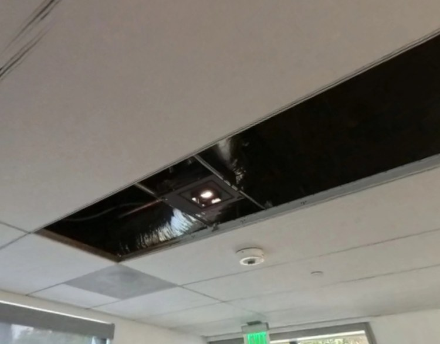
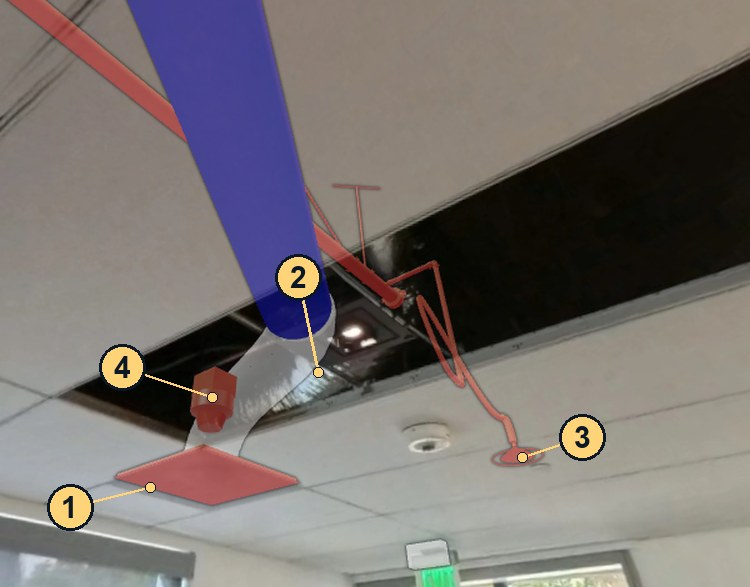
1 supply diffuser · 2 flex duct · 3 sprinkler head · 4 fire-alarm device (model position)
1–3 Visually close
Diffuser, flex duct and sprinkler head look close in this view
4 Apparent mismatch
~0.7 m in this view: verify on site
As-built check before sensors
With sensors
A sensor could point to the BIM pipe before anyone opens a tile; the model must match what is installed. Next: five small test installs and what each would show
UC Berkeley · Civil & Environmental Engineering
Five test installs: where, what, and what we would learn
Each one is a small trial on a real BIM element above a Level 1 ceiling; the next five slides show how each would look in the twin
Ask: one location, an owner and a short install window for a first test
Concept stage: no sensor is installed. Scale is indicative only; no costs have been estimated. Locations are BIM elements seen in the public May 6 capture.
11
SENSOR · WHERE
WHAT WE WOULD LEARN
SCALE (INDICATIVE)
Fiber temperature (DTS) + wetness sensor
Sprinkler main (Pipe219763)
Can a controlled temperature change be detected and mapped to the right BIM pipe segment?
One cable run, analyzer loan, contained thermal test
Duct airflow probe + one room reading
Supply branch 401233 and nearby diffuser
Measured branch airflow vs a verified design value; its trend vs one room temperature / CO2 reading
1 probe, 1 node; design value to verify
Leak (wetness) sensor
No-hub coupling 423698, lobby
Is water at this fitting detected? (Flow meter: a later option on a verified supply branch)
1 sensor; no cutting or shutdown
Power meter (current + voltage)
Circuit feeding VAV units (to confirm)
Load profile of the confirmed circuit: operating vs idle periods
Panel access, electrician
Wireless vibration node
Duct 399665, fed by a fan
Does duct vibration change reproducibly with the fan’s operating state?
1 battery node, IT approval
UC Berkeley · Civil & Environmental Engineering
Test install 1 · Fiber temperature on a sprinkler main
Can a controlled temperature change on Pipe219763 be detected and mapped to the right BIM pipe segment?
Sprinkler main above a Level 1 ceiling. Concept mockup — no sensors are installed; values are illustrative. Live twin: May 6, 2026 capture 35; demo sensors on real BIM elements.
12
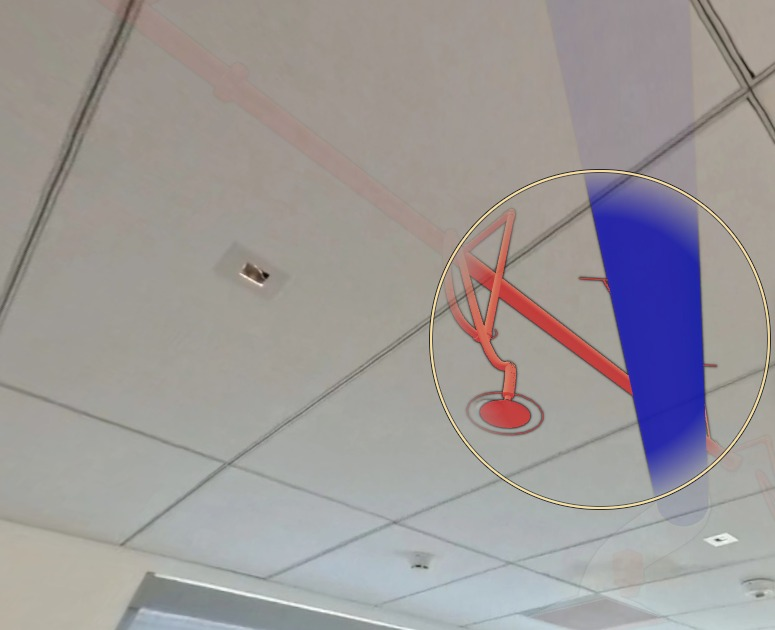
1 · Fiber temperature line (DTS) DTS fiber
Colour = temperature every ~1 m along the pipe
2 · Temperature anomaly (test) Alert
Controlled temperature change above the expected value
3 · Vibration node Vibration
Wireless MEMS node on the line: pump / flow condition
4 · Leak (wetness) sensor Leak
Point check on the tile below: is there water?
Test
Controlled change; analyzer reads 31 °C at 33 m
Map to BIM
33 m → Pipe219763 segment (route survey)
Check
Right segment? Wetness sensor checks water
22 °C baseline, 31 °C at 33 m along the cable (simulated test change)
+9 °C above baseline during the test
0.8 mm/s RMS, normal
Dry now; would flip to "water detected"
UC Berkeley · Civil & Environmental Engineering
Test install 2 · Airflow in a supply branch vs design
Compare measured airflow in branch 401233 with a verified design value and its trend with one room reading
Spiral supply-duct branches, Level 1 ceiling. 450 CFM and 23.5 °C are illustrative; branch–diffuser–VAV relation to be verified. Concept mockup — no sensors are installed; values are illustrative. Live twin: May 6, 2026 capture 43; demo sensors on real BIM elements.
13
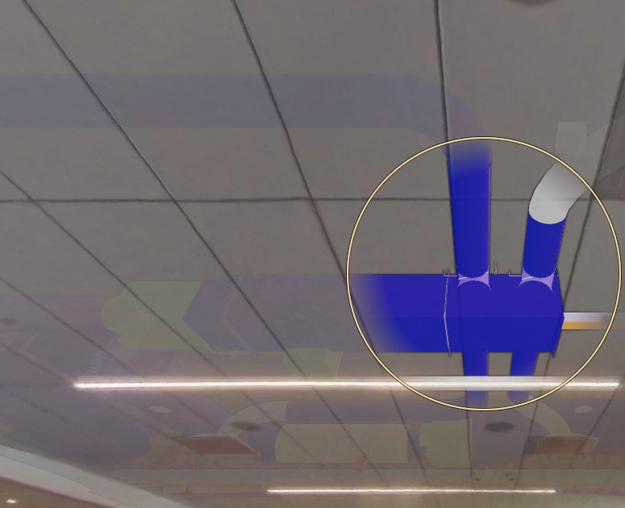
1 · Airflow + supply-air temperature Airflow
Duct probe: airflow and air temperature in the branch
2 · Room reading: CO2 / temperature / humidity CO₂·T·RH
One representative point reading next to the diffuser
3 · Comfort tint (illustrative only) Comfort
Not a measurement: one node cannot map a whole room
4 · VAV damper status (from BAS) BAS point
Not a new sensor: a point we would ask Facilities for
Measure
Branch airflow; one room CO2 / temperature reading
Map to BIM
Probe → duct 401233; verify branch–diffuser–VAV
Compare
Measured vs verified design value; trend vs room
420 CFM at 13.2 °C; illustrative design reference 450 CFM (to verify)
CO2 780 ppm, 25.9 °C, 48 % RH (one point reading)
Illustrative: +2.4 °C vs a 23.5 °C reference
Damper 72 % open; cooling mode
UC Berkeley · Civil & Environmental Engineering
Test install 3 · Wetness sensor at a pipe coupling
Place a leak (wetness) sensor below coupling 423698 to test detection of water at this fitting; a flow meter is a later option
Cast-iron no-hub pipe and coupling (BIM plumbing) above the Level 1 lobby; sensor location illustrative. Concept mockup — no sensors are installed; values are illustrative. Live twin: May 6, 2026 capture 1; demo sensors on real BIM elements.
14
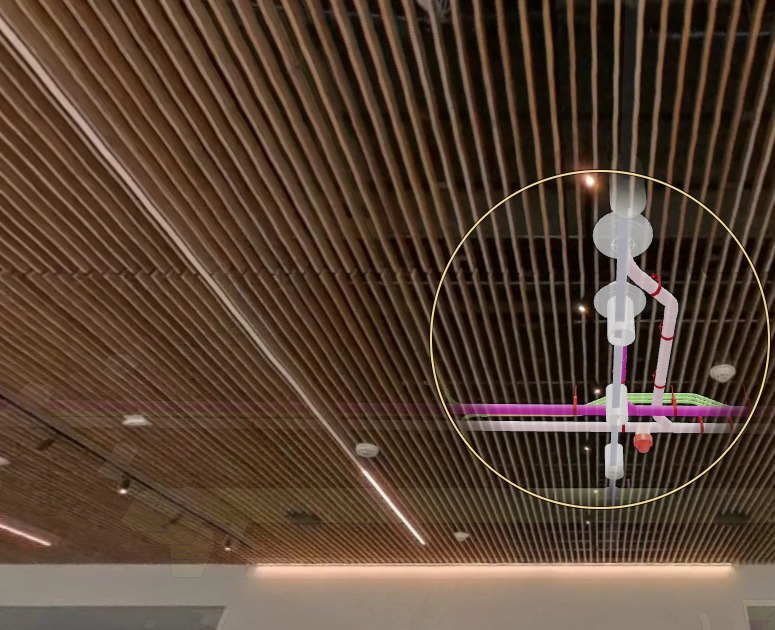
1 · Flow meter (later option) Flow
Not in this trial: only on a verified domestic supply branch
2 · Leak (wetness) sensor Leak
This trial: puck below coupling 423698
3 · Night-flow rule (later option) Alert
Persistent unexplained night flow triggers investigation
Place
Wetness sensor below coupling 423698
Detect
Does it report water at this fitting?
Show
Alert on that coupling in the Lens
Illustrative: 0.0 L/s normally; 0.6 L/s between 1 and 4 am
Dry; would flip to "water detected"
Illustrative: +0.6 L/s between 1 and 4 am
UC Berkeley · Civil & Environmental Engineering
Test install 4 · Power on a VAV circuit
After confirming the circuit, measure its load profile with a power meter (current + voltage); compare operating and idle periods
Price SDV5 VAV box and coil kit (BIM) above a Level 1 ceiling; no conduit is modelled in this view. Concept mockup — no sensors are installed; values are illustrative. Live twin: May 6, 2026 capture 43; demo sensors on real BIM elements.
15
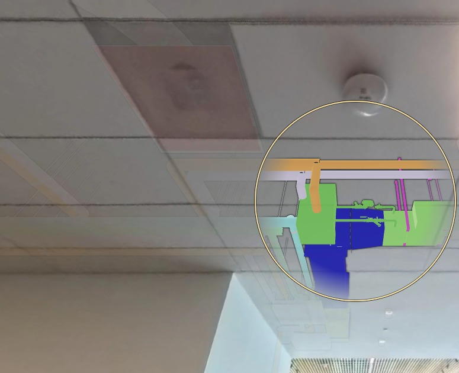
1 · Power meter (current + voltage) CT power
On the circuit feeding these units, once confirmed
2 · Unit power monitor CT power
Controller and actuator current at the VAV terminal unit
3 · Building-level context Bldg meter
Whole-building meter, shown for context only
Confirm
Which circuit feeds these units
Measure
Load profile: operating vs idle periods
Show
Circuit load on the BIM element, in the viewer
0.42 kW now (peak 0.55 kW at 11:00)
24 VAC controller; actuator 0.6 A
Building 212 kW (context only)
UC Berkeley · Civil & Environmental Engineering
Test install 5 · Vibration on a fan-fed duct run
Test whether vibration on duct 399665 changes reproducibly with the upstream fan’s operating state
Straight rectangular duct by the Level 1 windows; the fan itself is not in the scan. Concept mockup — no sensors are installed; values are illustrative. Live twin: May 6, 2026 capture 22; demo sensors on real BIM elements.
16
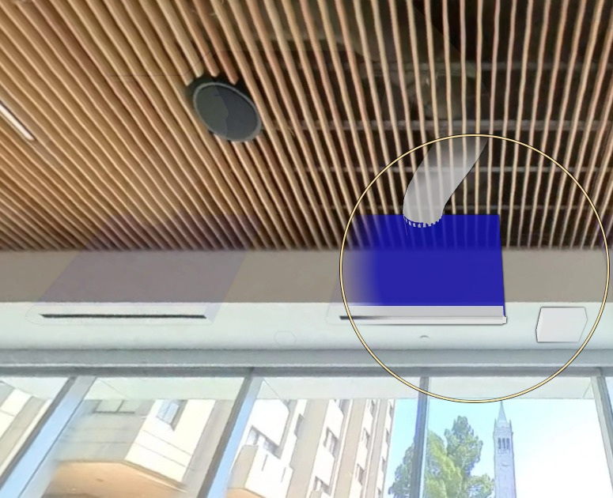
1 · Vibration node Vibration
Wireless MEMS accelerometer on the duct run
2 · Bearing temp. (separate future test) Bearing T
Not in this proposal: a later fan-mounted probe
3 · "Vibration change" flag Alert
A sustained change, flagged for inspection
Measure
Duct vibration; note the fan’s on / off state
Compare
Does vibration change with the fan state, every time?
Show
Flag a change for inspection in the Lens
2.1 mm/s RMS, up from 1.2 four weeks ago (illustrative)
Illustrative: 58 °C; reference 45 to 50 °C
+75 % in 4 weeks (1.2 to 2.1): flag for inspection
UC Berkeley · Civil & Environmental Engineering
First test and its success criterion: fiber temperature on Pipe219763
One pipe, one cable, one contained test, with a stated pass criterion.
17
Fiber on the pipe
Fiber cable along the sprinkler main (Pipe219763)
Temperature
Temperature every ~1 m along the cable
Map to BIM
Map cable distance to BIM pipe segments
Show in twin
Show temperature on the pipe in the twin viewer
Test
Apply a contained, controlled thermal test and check the result
Success criterion
• The test temperature change is detected and located on the correct BIM segment
• A wetness sensor below checks for water
• Tests the full chain: sensor → BIM element → viewer
Needs (to confirm)
• Facilities approval and pipe access
• A safe, contained way to apply the test change
• DTS analyzer loan
• Reference temperatures (BAS or handheld probe)
UC Berkeley · Civil & Environmental Engineering
Ready for real sensors
One feed format, each source tied to a BIM element; real feeds need an adapter, verified mapping and commissioning
Today every value in the twin’s sensor layer is simulated (labelled “Simulated”); no sensor is installed. Brick class names are candidates, not yet verified. Headset and dashboard connections are proposed, not demonstrated.
18
Today: simulated feed in the browser, labelled “Simulated” → Next: adapter + verified mapping + commissioning → “Live”
✓ Registry: 17 demo entries (13 sensor/source entries + 4 derived indicators), tied to real BIM element GUIDs, with units, rules and Brick classes
✓ One feed format and shared rules: missing is never zero, stale after 3 intervals, units must match
✓ Adapters: simulator live today; BMS, meter, gateway and fiber stubs ready to be filled in (meter adapter to target SkySpark)
UNIVERSITY OF CALIFORNIA, BERKELEY
Civil & Environmental Engineering
Thank you
Yoonsung
QUESTION 1
Can we get SkySpark meter data before the Nov 16 presentations?
QUESTION 2
Can we test mixed reality in the Grimes foyer with the Quest 3 this week?
QUESTION 3
Where could we try a first test install?
A
Appendix: how the sensors work
Sensing options, fiber sensing, the CE278 DAS example, MEMS nodes and wireless networks
SECTION A
UC Berkeley · Civil & Environmental Engineering
Sensing options for Grimes
From Prof. Soga’s lab and the CE170/278 course, ranked by fit for Grimes
Lab track record (tunnels, pipelines, piles): Crossrail, EBMUD Hayward Fault pipe, PG&E gas pipe, Millennium Tower. No operating-building MEP deployment found. Concepts: CE170/278 Infrastructure Sensing, UC Berkeley (Prof. K. Soga).
21
| Technology | What it detects | Fit for Grimes | Main limit |
|---|---|---|---|
| 1 Fiber temperature (DTS) along pipes / plenums | Leaks as warm or cold spots, ~1 m apart; radiant-loop faults | Best fit | Costly analyzer; retrofit cable routing |
| 2 Wireless MEMS vibration nodes | Pump, fan and pipe vibration level and spectrum | Easy, commercial | Battery life; radio through floors; IT approval |
| 3 Fiber vibration (DAS) on risers | Flow noise, water hammer, pump harmonics along the riser | Research-grade for leaks | Data volume (kHz per metre); building noise |
| 4 FBG point sensors | Strain / temperature at chosen points | Niche | Misses leaks at unknown locations |
| 5 Indoor-environment IoT nodes | Temperature, humidity, CO2 | Low | Mostly duplicates BAS points |
UC Berkeley · Civil & Environmental Engineering
Fiber sensing: one cable, many sensors
A laser pulse is sent down the fiber; light scattered back is timed to give a reading every metre or so
Concepts: CE170/278 Infrastructure Sensing, UC Berkeley (Prof. K. Soga). Typical values; actual performance depends on the analyzer and cable. Sketches drawn for this deck.
22
| Technique | Scattering | Measures | Spacing / speed (typical) | Use in Grimes |
|---|---|---|---|---|
| DTS | Raman | Temperature | ~1 m over km; 0.1 °C | Leaks as warm or cold spots on pipes; radiant-loop faults |
| BOTDR / BOTDA | Brillouin | Strain + temperature | ~1 m; slow (static) | Pipe and hanger strain; slab or riser movement |
| DAS | Rayleigh (phase) | Vibration / sound | 1–10 m; up to kHz | Flow noise, water hammer, pumps along a riser |
| FBG | Bragg gratings | Strain / temperature | Chosen points only | A few known hot spots: pump or AHU mounts |
How it works
Sketches: DTS temperature bump at a leak · BOTDR shift where strained · DAS stripes in distance × time · FBG reflects one wavelength
Distributed
DTS, BOTDR, DAS: every metre of the cable is a sensor, so a leak can be anywhere along a pipe
Point
FBG and MEMS nodes: precise, but only where they are placed
UC Berkeley · Civil & Environmental Engineering
From the CE278 project: the DAS method a riser would use
Own CE278 project: one minute of DAS on a roadside fiber. The same method on a riser would show water hammer and pump noise
Figures: own CE278 final project (UC Berkeley, fall 2025), DAS run 15:59:38–16:00:38, focused channels 1450–1650; course-provided DAS dataset.
23
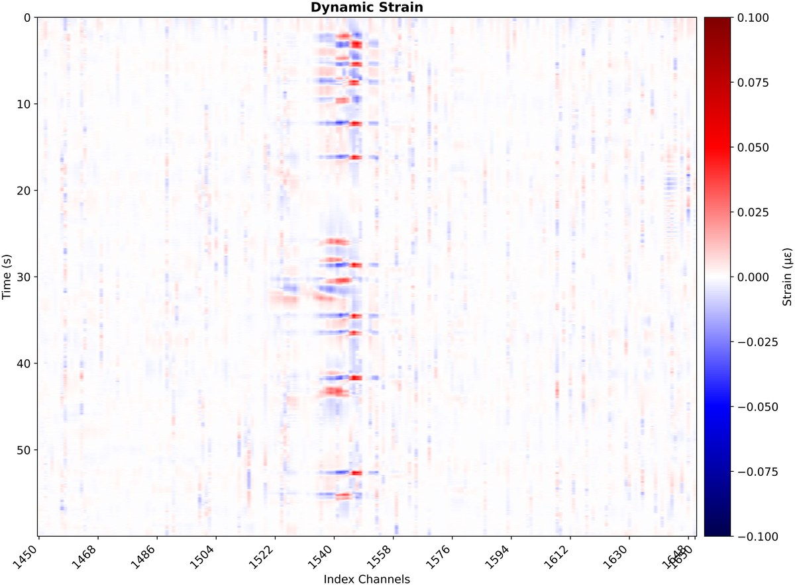
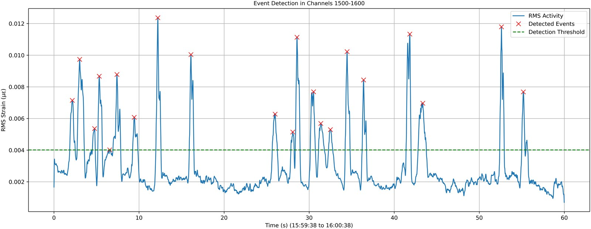
Reading a waterfall
Across: position along the fiber (channel ≈ 1 m). Down: time. Colour: dynamic strain. A vehicle = a short burst where it passes.
Same method on a Grimes riser
Across = height up the riser. Water hammer, pump noise or a leak’s hiss would show as stripes at the floor where they happen.
Waterfall: 60 s of dynamic strain, channels 1450–1650
Detection: RMS strain in channels 1500–1600; each × above the dashed threshold is an event
UC Berkeley · Civil & Environmental Engineering
Point sensors: MEMS vibration nodes
Micro-electro-mechanical systems: silicon-made, small, cheap and low-power, the core of wireless vibration nodes
Figure: CE170/278 Infrastructure Sensing, UC Berkeley (Prof. K. Soga), Lecture 2-4, p. 3; Figure: CE170/278 Infrastructure Sensing, UC Berkeley (Prof. K. Soga), Lecture 2-4, p. 19.
24
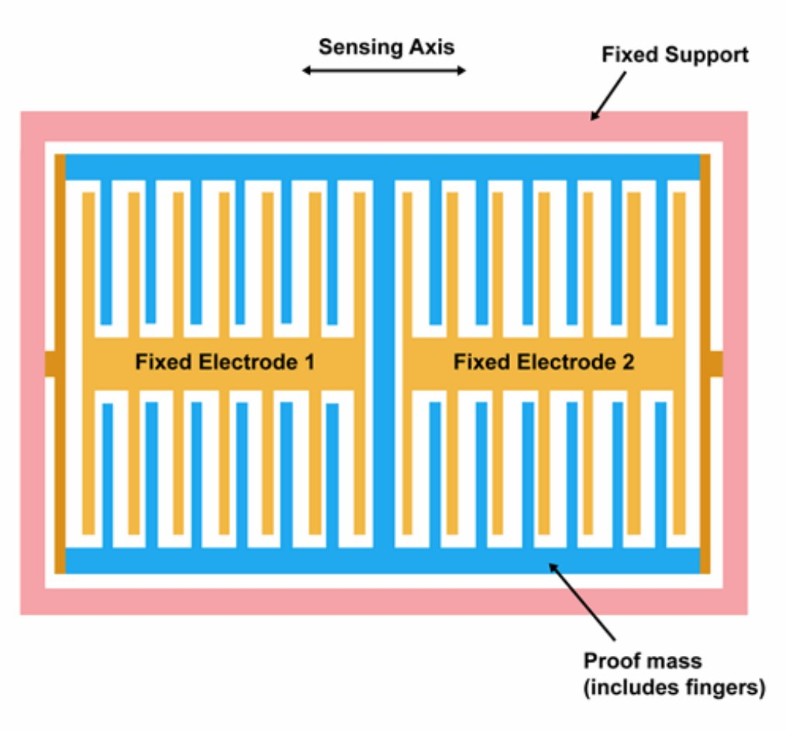
MEMS accelerometer (comb design)
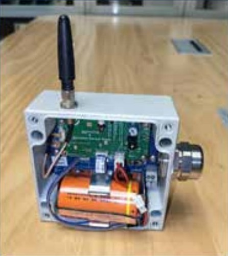
Battery wireless sensor node (course lab hardware)
How it works
• A proof mass on springs moves its comb fingers between fixed electrodes; the capacitance change gives acceleration
• Made thousands at a time on silicon: small, cheap, milliwatt power, so a node can run on a battery
• Records vibration level and spectrum; samples ~1 kHz, so it stores short bursts when triggered
In Grimes
Clamp a node on a pump, fan, air-handler casing or pipe hanger: rising vibration warns of bearing wear or loose supports before failure (concepts 1 and 5).
UC Berkeley · Civil & Environmental Engineering
Wireless sensor networks: what limits them
Sensor nodes report by radio to a gateway; battery, sampling rate and radio paths decide the design
Diagram drawn for this deck. Design points summarised from CE170/278 Infrastructure Sensing, UC Berkeley (Prof. K. Soga), Lecture 2-4.
25
How a wireless network would sit in Grimes (illustrative layout, not a design)
Design limits (CE170/278)
• Topology: star is simple; mesh relays around obstacles
• Battery: an hourly tilt node on one D-cell ≈ 20–25 years (theory); a 1 kHz vibration node records 5–25 s bursts when triggered
• Sampling: slow for temperature, humidity, CO2; fast for acceleration and sound
• Radio: walls, floors, people and metal ducts block the signal
For Grimes
Nodes in ceiling plenums, a gateway per floor, triggered vibration recordings, IT approval for the radio